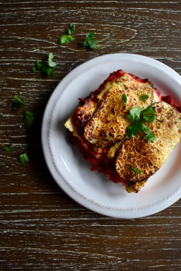

Lasagne

Description
Tasty and flavorful lasagne cooked with love.
Ingredients
- Pasta
- Ricotta
- Parmesan
- Italian Sausage
- Ground Beef
- Marinara Sauce
Steps
- Boil Pasta Cook the pasta in a bowl of salted water.
- Cook the italian sausages and ground beef with some sliced garlic and onions.
- Stir the cheese mixture in a bowl.
- Layer the meat and cheese mixture together with lasagne noodles in a form.
- Bake the mixture until brown and bubbly.
Original recipe from spendwithpennies.com